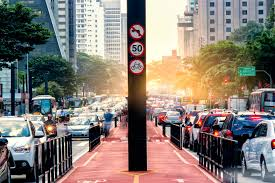
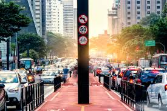

Introdução
A conexão entre o modo de vida rural e urbano é essencial para um desenvolvimento sustentável e harmonioso. Vamos celebrar essa união!

A conexão entre o modo de vida rural e urbano é essencial para um desenvolvimento sustentável e harmonioso. Vamos celebrar essa união!


 

"A vida na cidade é agitada, mas sempre busco um tempo para visitar minha família no campo." - João, morador da cidade.
"O campo me traz paz, e as visitas à cidade são sempre cheias de novas experiências." - Maria, agricultora.